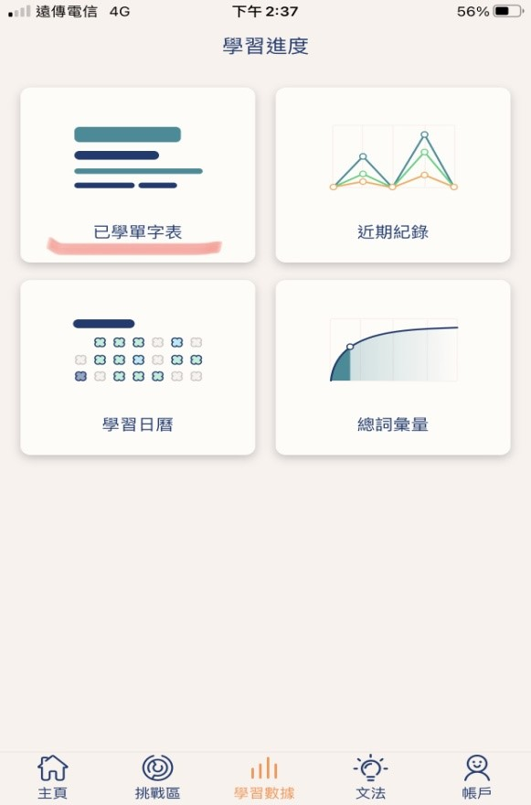

|
一、開始上課前快速瀏覽已學單子表 按學習數據、按已學單字表 |
|
|  | |
|
按已學單字表、不熟的單字、例句及翻譯 使用四個訣竅：聽、說、讀、寫.(後面有說明) |
|
|
二、截圖字卡，離線學習 |
|
|
三、多利用零碎時間學習：枕上、馬上、廁上 |
|
學英文雖然沒有捷徑，但是用對方法就能事半功倍。
以下是許多人公認的好方法：
一、每次做新的練習之前記得花3~5分鐘快速瀏覽已學單字表
熟悉的字只要快覽過去，無需停留。若碰到不熟的字，使用下面的訣竅來記憶，保證有效。
共四招：聽、說、讀、寫.。
第一:聽單字。按喇叭符號即可聽到發音。
第二:說出聲音。難的字要多唸幾次。
第三:讀懂例句。較難的句子可參考中文翻譯。
第四:寫出單字在紙上。不熟的字要多練幾次。
這四個步驟幾乎同時可完成，約需3~5分鐘就可複習完畢。
只要這麼做，成效就會很明顯，請務必試試看喔。
二、此外，建議將答錯的字卡，截圖下來，在沒有網路的時候，可利用這些字卡來複習。
三、最後，提醒忙碌的人，要多利用零碎時間學習。
Lingvist的設計，其實很適合忙碌的現代人。只要善用空檔時間，就可很輕鬆達成每天50個單字的目標。要如何找到零碎時間呢？我們可效法古人的做法：從前趕考的讀書人會利用「三上」的時間來複習：枕上、馬上、廁上。
我們也可多利用睡前或者在通勤中、甚至是上廁所的時候小小複習一下，多背幾個單字。若能持續這樣做，成績一定會越來越好。希望以上的分享能夠幫助想獲得高分的人。祝您學習成功！